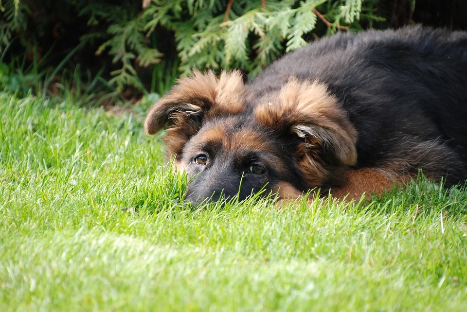

Je vais maintenant vous parler du caractère de cette race de chien.
L’Altdeutsche Schäferhund tout d’abord un chien très affectueux, qui n’hésitera pas à vous le montrer. Pour être heureux, il doit se sentir aimé, en particulier de son maître de qui il est très proche, mais je peux vous assurer qu’il vous le rendra bien. C’est un chien de famille, qui pourra très bien rester en présence d’adultes comme d’enfants, si tant est qu’il a été habitué à eux. Cependant, veillez bien à ce que tous les membres la famille le respectent et s’occupent bien de lui, sinon il pourrait mal le prendre et pourrait même ne plus vouloir s’approcher d’eux. Il est aussi très volontaire, il voudra vous aider au quotidien, et assister à n’importe laquelle de vos actions, c’est ce que l’on pourrait appeler un chien « pot de colle ». Ensuite, très sportif, il sera très heureux de participer aux activités sportives en votre compagnie et de partir en longue ballades avec vous. Très intelligent, il aime aussi beaucoup travailler, et que vous réalisiez des activités avec lui pour stimuler son intelligence. Il est aussi très joueur, et n’hésitera pas à vous solliciter souvent pour que vous jouiez un peu avec lui. Le mien par exemple ADORE les balles, où qu’on aille, il faut qu’il en promène une avec lui. Je crois qu’il ne pourrait pas passer une seule promenade sans être en contact avec une.

Vous souhaitez revenir sur la page d'acceuil ? Cliquez ici
Vous pouvea aussi accéder à mes conseils pour s'occuper au mieux de la race ici